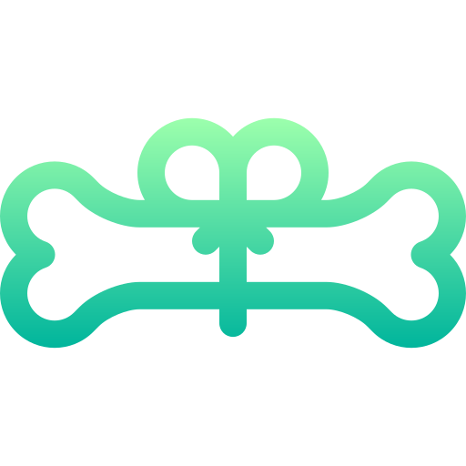
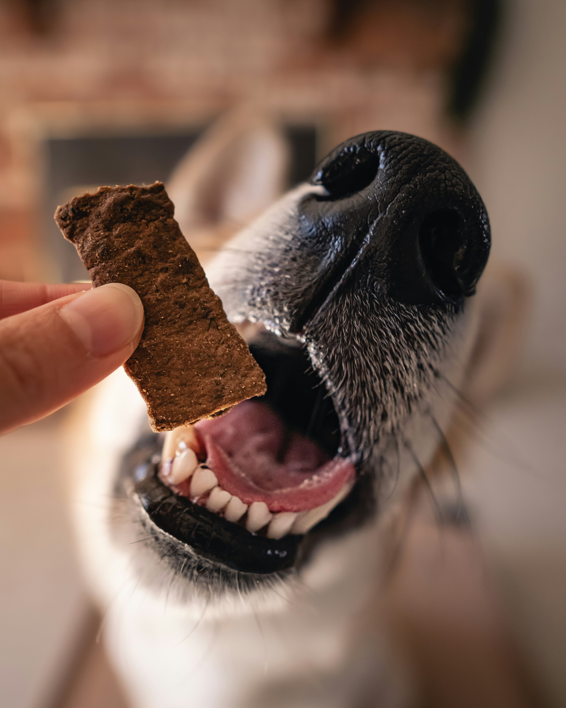
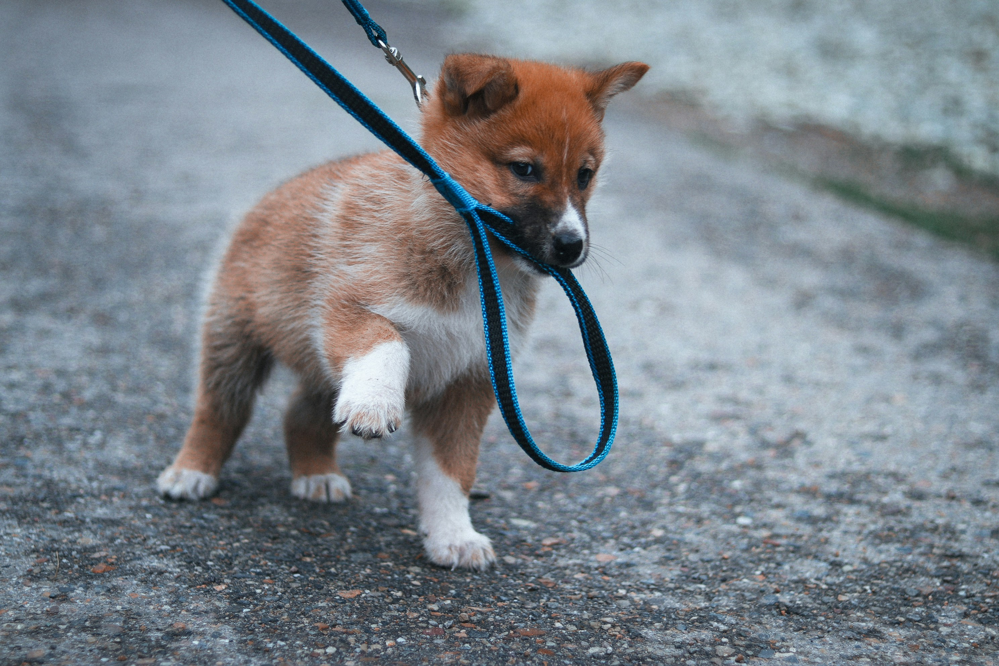
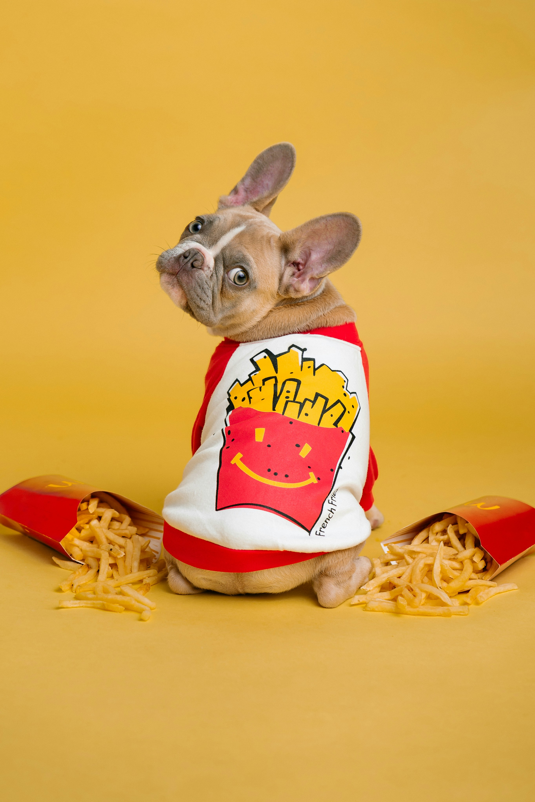
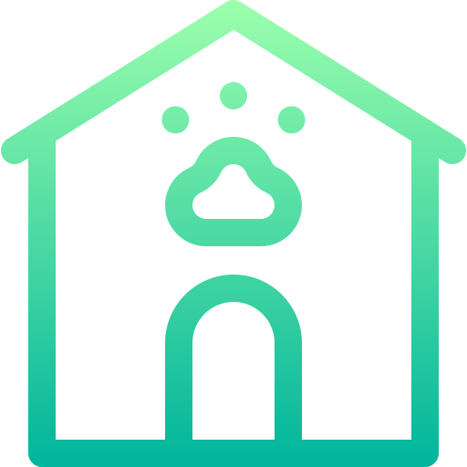
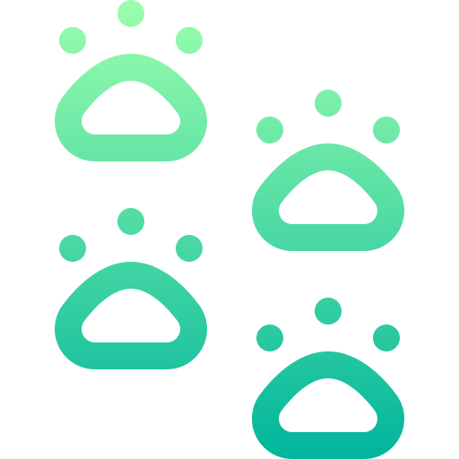

Shop
"Good Boy Approved"


Food and Treats

Beds

Accessories

Attire
About Us

Fetch & Frill was founded in Austin, Texas in 2016 by lifelong dog lover Jonathan Wilbur, whose passion for pets and eye for style inspired him to create something special for fellow dog enthusiasts. Alongside a close-knit group of dog-loving friends who shared a flair for approachable luxury and upscale accessories, Jonathan began curating modern, trendy, and fashionable items that helped dogs look as stylish as the people who loved them. What started as a small passion project quickly grew into a beloved online boutique dedicated to combining comfort, quality, and personality in every product. Today, Fetch & Frill continues to celebrate the bond between pets and their owners while giving back by donating a portion of proceeds to local animal shelters across the United States.
Meet the Team

Alicia Stanton
Charleston, South Carolina
Alicia is the Creative Director at Fetch & Frill, where she curates product collections and shapes the brand’s warm, upscale style across the online shop and social media. She loves discovering unique pet accessories that blend charm and practicality, and outside of work she enjoys coastal photography with her rescue Spaniel, Rosie.
Shannon Gerber
Austin, Texas
Shannon serves as the Customer Experience Manager, helping pet parents find the perfect products while ensuring every order feels personal and thoughtful. She brings energy and care to the support team each day, and in her free time she enjoys hosting backyard brunches for friends and family.
Michael Gibson
Denver, Colorado
Michael is the Operations & Fulfillment Lead, keeping inventory organized and making sure orders are packed and shipped quickly and accurately. His attention to detail helps Fetch & Frill run smoothly behind the scenes, and outside of work he spends weekends hiking trails with his Golden Retriever, Scout.
Steven Tolliver
Portland, Oregon
Steven works as the Digital Marketing Specialist, creating email campaigns and online content that connect dog lovers with Fetch & Frill’s newest arrivals. He enjoys blending creativity with analytics to grow the brand, and when he’s offline he loves brewing small-batch coffee at home.